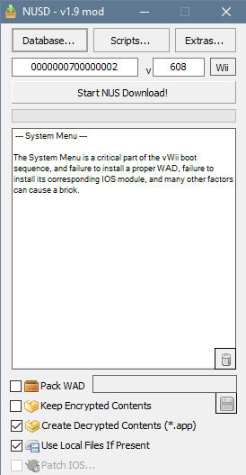
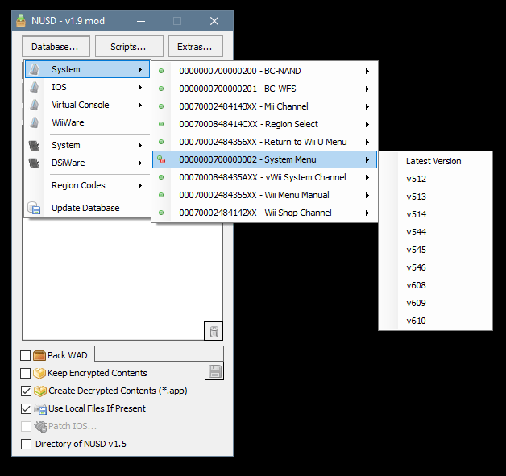
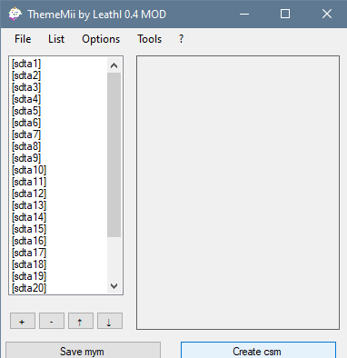

Installing Wii Menu Themes on vWii
Jesteś znudzony nudnym, białym wyglądem Wii Menu i chcesz zainstalować jakiś fajny motyw? Ten poradnik pomoże Ci zainstalować nowy motyw dla Twojego Wii Menu!
NIE odpowiadamy za zbrickowanie lub uszkodzenie Twojej konsoli w żaden sposób. Jeżeli dokładnie będziesz podążał za tym poradnikiem, nic złego się nie stanie.
Do NOT install the themes made in this guide on an actual Wii. They are only compatible with the vWii System Menu and will brick an actual Wii.
WiiMotes with Wii MotionPlus will not work on MyMenuify, unfortunately there isn’t anything we can do about this at the moment and you’ll have to use an older Wii remote.
There are some themes that aren’t compatible with the vWii System Menu, they may result in anything from graphical glitches to a full theme brick. We recommend only using themes from rc24.xyz/goodies/themes since these are compatible with modern versions of the System Menu.
If you somehow happen to brick your vWii, follow this guide. (Archive)
Co będziesz potrzebował
- Wii U z zainstalowanym Homebrew Channel.
- Wiilot bez Wii MotionPlus
- Karta SD
- Komputer z systemem operacyjnym Windows (lub możesz użyć Mono lub Wine jeżeli korzystasz z macOS/Linux’a)
- MyMenuify
- ThemeMii Mod
- NUS Downloader (vWii)
Linki do motywów
Below are some links to themes.
Only themes from the RiiConnect24 Themes page have been tested on vWii. Themes from other sources may not be entirely compatible with vWii, use these at your own risk.
UPEWNIJ SIĘ, ŻE PRZECZYTASZ WSZYSTKIE OSTRZEŻENIA PRZED KONTYNUOWANIEM!
Instrukcje
Sekcja I - Znajdowanie motywu
-
When choosing a theme, it is important to make sure that your theme is compatible with the vWii System Menu.
-
Older themes for 3.X or 2.X are NOT compatible with vWii and may cause a brick if used.
-
Most of the themes on RiiConnect24’s theme page have been tested on vWii and they are known to work.
Sekcja II - Pobieranie plików .app
This assumes your vWii is on the latest Wii Menu version.
There are a couple of ways to get the .app files for your vWii System Menu, in this guide we’ll be using the vWii version of NUS Downloader.
- Open the folder and launch NUS Downloader.
- Open the menu in NUS Downloader and click the database button.
- Go to System > System Menu and select a version according to your region.
| Region | Wersja vWii Menu |
|---|---|
| Japonia | v608 |
| USA | v609 |
| Europa | v610 |
After selecting the correct version to download, check the box for Create Decrypted Contents (*.app). Then, press the Start NUS Download Button on the top of the window.


After the download has finished, search for .app file corresponding to your region in the folder where NUS Downloader is.
| Region | Plik.app dla twojego regionu |
|---|---|
| Japonia | 0000001c.app |
| USA | 0000001f.app |
| Europa | 00000022.app |
If you can’t find the .app file, it’s possible you have downloaded the wrong version of the Wii Menu and you’ll need to try again.
After you find the .app file, copy it to the main directory of the folder containing ThemeMii. Then, copy a version of it to the theme folder in your SD card.
Sekcja III - Tworzenie motywu
- Launch ThemeMii Mod.
- Do not click
Download Base App, ThemeMii does not have base .app files for vWii. If you download a base app, you must delete it in order to use the vWii .app file. - In ThemeMii select
File->Openand navigate to the .mym theme you downloaded earlier. - Click on
Create CSMand select the .app file that you copied to the ThemeMii folder. - Now navigate to the theme folder on your SD card and save your theme with the .csm extension.

Sekcja IV - Instalowanie motywu
- Eject your SD card from your PC and put it into your Wii U.
- Start the Homebrew Channel and launch MyMenuify.
- Navigate to your theme folder and select the .csm file you just created.
- When it prompts you to install the theme say
Yes, and wait for it to finish. - When it finishes installing, MyMenuify will prompt you to either
ContinueorExit, chooseExit.
If you did everything correctly, you should now have your custom theme installed on your Wii Menu.
Reverting to Original Theme
- Uruchom Homebrew Channel.
- Launch MyMenuify and navigate to your theme folder.
- Select the .app file you copied to the SD card at the end of section 2 as if you were installing a theme.
- Select Install and wait until it finishes.
- When it’s done, you can exit MyMenuify.